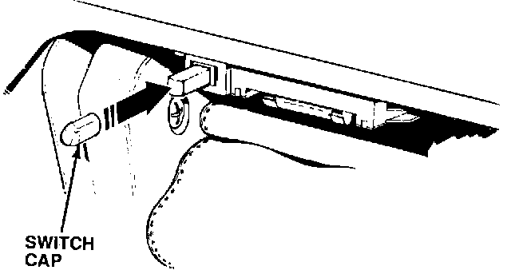

Glove Box - Light Stays On
September 15, 1992BULLETIN NO.
92-026
YEAR
1991-92
MODEL
LEGEND
VIN APPLICATION
ALL
Glove Box Light Stays On
SYMPTOM
The glove box light stays on when the glove box lid is closed. This is noticeable at night when the headlights are on and the inside of the car is dark; you can see a glow around the glove box lid.
PROBABLE CAUSE
The glove box switch plunger is too short.
CORRECTIVE ACTION
Install a cap on the glove box switch plunger to lengthen the plunger.

1. Using a sharp utility knife, shorten the glove box switch cap (see PARTS INFORMATION) to 12 mm.
2. Press the switch cap over the glove box switch plunger.
3. Turn the headlights on, and confirm that the glove box light goes off when the glove box lid is closed.
PARTS INFORMATION
Glove Box Tube Cap: P/N 77502-SP0-999
WARRANTY CLAIM INFORMATION
In warranty:
The normal warranty applies.
Out of warranty:
Any repair performed after warranty expiration may be eligible for goodwill consideration by the District Service Manager. You must request consideration, and get the DSM's decision, before starting work.
Operation number: 715010
Flat rate time: 0.2 hour
Failed P/N: 34254-SP0-A03
Defect code: 066
Contention code: B03